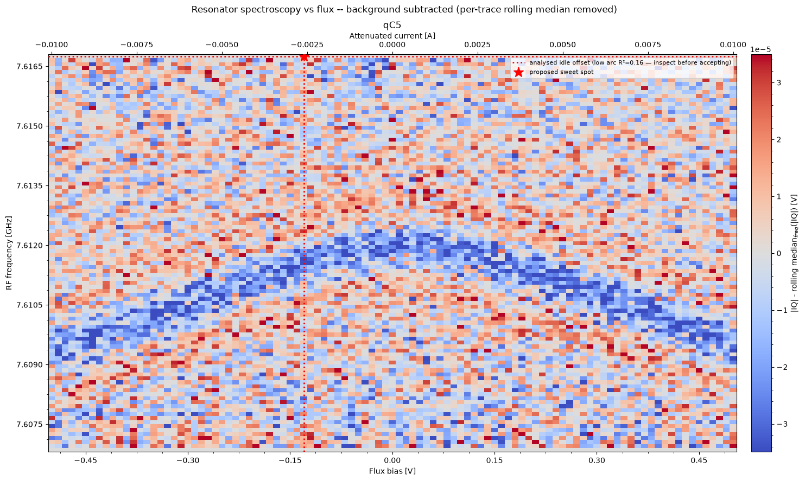
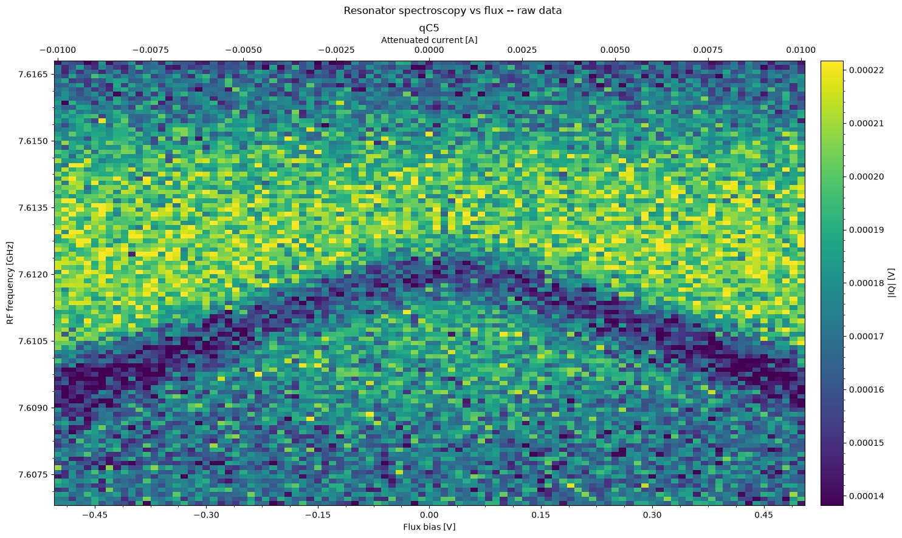
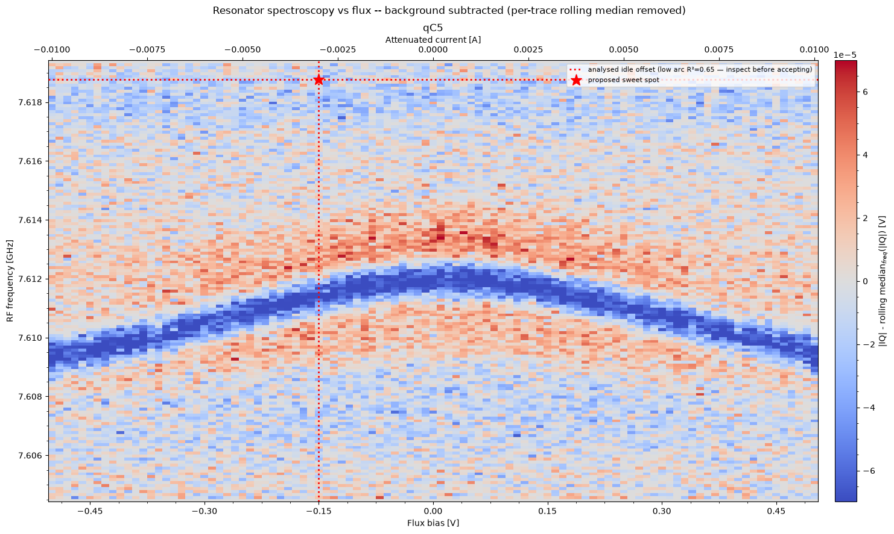
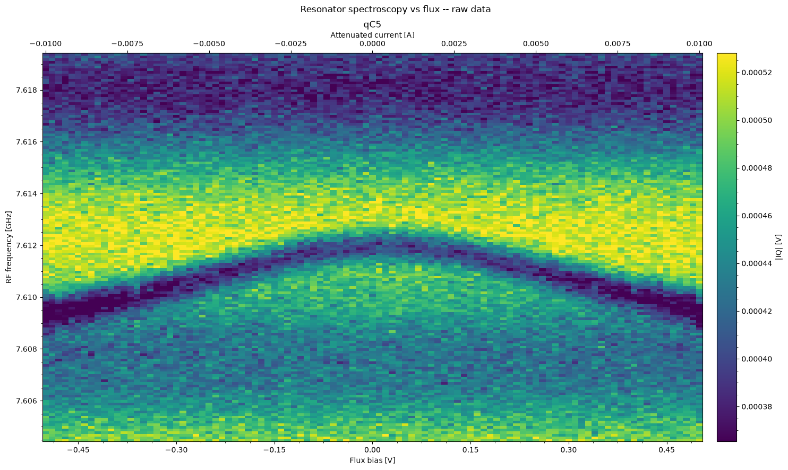
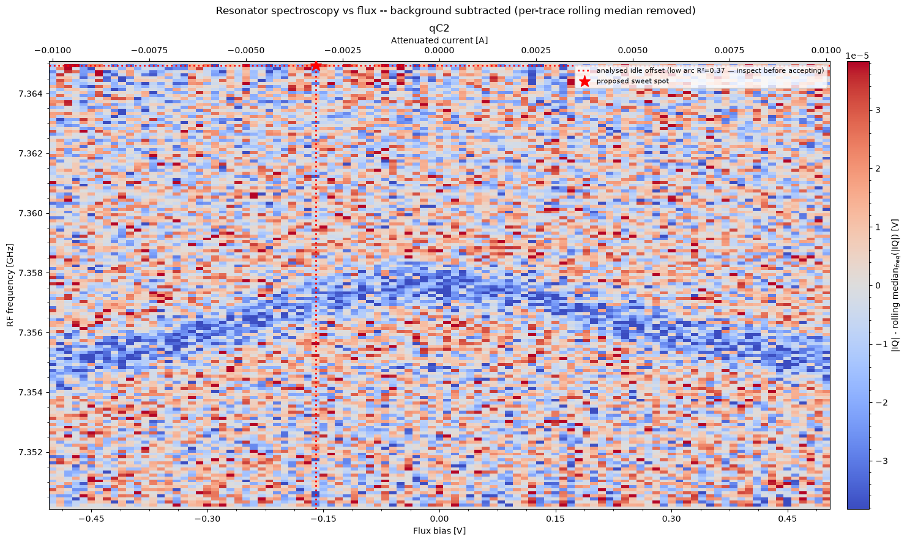

Gilboa qC5 failed twice on the 20–21 Sep night because the model committed the flux offset that resonator_spectroscopy_vs_flux proposed from a failed arc fit. The proposed point was visibly off the resonator dip in the node's own figure. We replayed the exact commit turn — same system prompt, tools, messages and images — five times each with and without one generic sentence added to the bring-up recipe, on both contexts.
On gilboa's C row the resonator arc is shallow (≈2 MHz peak to peak over a ≈1 V flux period) and its apex is within a few mV of 0 V (reference joint_offset 0.006 V). The node's cosine fit fails on the noisy arc (R² 0.16 and 0.65 against a 0.80 threshold) and falls back to a "measured maximum", which lands on the noisiest column of the trace: the star is drawn at the top of the frequency axis, −0.13 V / −0.15 V, nowhere near the dip. The proposal still goes into proposed_updates, and the model committed it in both runs (turn 12 of the first attempt, turn 14 of the readout-fix rerun) with notes such as "the measured apex is clearly visible in the plot". At −0.15 V the qubit sits ≈0.15 Φ₀ down the arc: f₀₁ far from the seed, tiny dispersive shift, and the rest of the run (19 spectroscopies, 22 flat Rabis, then a drive-line rewiring) never recovered.
| Context | Run · transcript | Replayed turn | Node run | Readout amplitude at the time | Arc R² | Period coverage | Node's star | Images in context |
|---|---|---|---|---|---|---|---|---|
| Context A — first attempt | n4_gilboa_openrouter_20260920-1712 · qC5 ~/code/QM/tinycal/runs/n4_gilboa_openrouter_20260920-1712/qC5/transcript.json | turn 12 (messages[:23]) | m-XRRNY2 | 0.05 V (provisional, ~10× too low — the readout-power failure fixed by the recipe change) | 0.157 | 0.96 of a fitted 1.04 V period | −0.13 V | 7 |
| Context B — readout-fix rerun | n4_gilboa_openrouter-R_20260920-1712 · qC5 ~/code/QM/tinycal/runs/n4_gilboa_openrouter-R_20260920-1712/qC5/transcript.json | turn 14 (messages[:27]) | m-VKHBB9 | 0.126 V (punch-out found, readout fine) | 0.646 | 0.38 of a fitted period | −0.15 V | 11 |
Contexts are transcript.json[:N] of the run with the plot pointers restored to the PNGs that were still inside tinycal's 16-image window at that turn (first image drop in both runs was at turn 20). Model config from the run's start event: qwen/qwen3.8-27b, effort high, max_tokens 16 000, tool history native. 27–31 k input tokens per call.
Inserted into bringup_recipes/flux_tunable_1q.md as its own paragraph just before "When a node fails or its result contradicts an earlier one" — i.e. in the system prompt, not as a per-turn message:
Every node that fits the data draws its fit and the point it proposes (a sweet spot, a resonance, an optimum) on its figure. Before committing a proposal, look at the figure and check that the fit actually follows the data and that the marked point sits where physics says it should — the fit can be wrong, and a proposal from a poor fit is not evidence. If the marked point does not make physical sense, do not commit it; re-measure so that the feature is unambiguous instead.
| Context | Recipe | commits the node's star (wrong) | commits ≈0 V read off the figure (right) | re-measures the flux map |
|---|---|---|---|---|
| Context A — first attempt | without note | 4/5 | 0/5 | 1/5 |
| Context A — first attempt | with note | 3/5 | 0/5 | 2/5 |
| Context B — readout-fix rerun | without note | 4/5 | 0/5 | 1/5 |
| Context B — readout-fix rerun | with note | 0/5 | 4/5 | 1/5 |
With a clean figure the note flips the outcome. On context B every trial with the note rejected the star: four wrote joint_offset = 0 reasoning that "the arc clearly peaks near 0 V, not at −0.15 V where the fit placed it" (true sweet spot 0.006 V), one re-ran the node with more shots. Without the note the same figure was committed at −0.15 V in 4 of 5 trials, one of them "confirmed by visual inspection of the raw data".
With a faint figure the note barely helps. On context A the arc is only marginally above the noise (readout 10× too low), and the model still commits −0.13 V in 3 of 5 trials with the note. The trials that re-measured reasoned correctly ("the proposed apex frequency is at the edge of the sweep window, not where the dip is visible at ~7.6108 GHz") but were also the long ones (4 000+ output tokens); the short replies commit. That failure is upstream of the flux map and is what the readout-power recipe change already addresses.
Every re-measure choice was sensible: the same ±0.5 V range (the port limit on gilboa's direct LF-FEM z lines), 200–300 shots, a 15–20 MHz span or more flux points. None tried an out-of-range sweep.
| Context | Recipe | # | Reply | Model's own note (excerpt) | out tok | s |
|---|---|---|---|---|---|---|
| original (turn 12) | without note | #1 | commits apex -0.13 V | Flux sweep shows a clear arc with apex at -0.13 V, 7.61675 GHz. The fit R²=0.157 is poor but the measured apex is clearly visible in the data. Committing the idle flux offset and readout frequency at the sweet spot. Skipping phi0 since the period fit is unreli | 2079 | 42.9 |
| original (turn 12) | without note | #2 | commits apex -0.13 V | Flux arc shows a clear U-shape with measured apex at -0.13 V (7.61675 GHz). R² is low due to port-limited period coverage (0.96), but the maximum is clearly inside the data. Committing the idle flux offset at the upper sweet spot and the corresponding readout | 1787 | 39.0 |
| original (turn 12) | without note | #3 | re-measures resonator_spectroscopy_vs_flux {"use_state_discrimination": false, "min_flux_o | First flux map had R²=0.157 (unreliable fit) and the proposed apex frequency (7.61675 GHz) is at the edge of the 10 MHz sweep window, not where the dip is visible (~7.6108 GHz). Re-running with 200 shots and 15 MHz span for a better fit. | 4127 | 68.6 |
| original (turn 12) | without note | #4 | commits apex -0.13 V | Flux arc apex at -0.13 V, 7.61675 GHz is the upper sweet spot. Committing idle flux offset, readout frequency, and phi0 values. R² is low due to low readout power but the arc structure is clear in both plots. | 1918 | 40.6 |
| original (turn 12) | without note | #5 | commits apex -0.13 V | Flux sweep shows the arc maximum at -0.13 V (upper sweet spot). R² is low due to <1 period coverage, but the arc shape is clearly visible. Committing the proposed flux offset and readout frequency. The frequency will be refined in later steps (readout_frequenc | 4809 | 62.3 |
| original (turn 12) | with note | #1 | commits apex -0.13 V | Flux map shows a clear arc with apex at -0.13 V, 7.61675 GHz. Cosine fit is poor (R²=0.157) because the sweep covers only 96% of the flux period, but the measured maximum is visually clear. Committing the measured apex as idle flux offset and readout frequency | 1446 | 21.8 |
| original (turn 12) | with note | #2 | commits apex -0.13 V | Committing the measured arc apex: idle flux offset -0.13 V and resonator frequency 7.61675 GHz. Skipping phi0_voltage and phi0_current because the fit R²=0.157 is far below the 0.8 threshold — those values are unreliable. The flux offset will be refined by ram | 3524 | 46.6 |
| original (turn 12) | with note | #3 | re-measures resonator_spectroscopy_vs_flux {"min_flux_offset_in_v": -0.5, "max_flux_offset | R²=0.157 is far below the 0.80 threshold — the fit is unreliable and the proposed apex is outside the data. The raw data shows a clear arc but with too much noise at 100 shots. Re-running with 300 shots and a wider 20 MHz frequency span to capture the full arc | 4604 | 59.5 |
| original (turn 12) | with note | #4 | commits apex -0.13 V | The flux arc shows a clear measured maximum at -0.13 V, 7.61675 GHz. The fit R² is poor (0.157) so phi0 values are unreliable, but the measured apex is physical and inside the sweep. Committing the idle offset and readout frequency at the arc maximum (upper sw | 1987 | 27.6 |
| original (turn 12) | with note | #5 | re-measures resonator_spectroscopy_vs_flux {"num_shots": 300, "min_flux_offset_in_v": -0.5 | Previous run had R²=0.157 (very poor fit) likely due to low SNR at 100 shots. Re-running with 300 shots, 15 MHz frequency span and 0.05 MHz step for a cleaner arc measurement. | 2188 | 28.8 |
| rerun (turn 14) | without note | #1 | commits apex -0.15 V | Setting the flux bias to the measured sweet spot at -0.15 V and updating the resonator frequency to 7.61877 GHz at that bias point. Skipping phi0 values since period coverage was only 38%. | 2278 | 45.3 |
| rerun (turn 14) | without note | #2 | commits apex -0.15 V | Flux port is limited to ±0.5 V so cannot cover a full period. The measured apex at -0.15 V / 7.61877 GHz is the best available from this sweep. Committing the joint offset, resonator frequency at that point, and the full_scale_power from the earlier power swee | 716 | 14.9 |
| rerun (turn 14) | without note | #3 | commits apex -0.15 V | Flux port limited to ±0.5 V so can't cover full period. The arc peak is clearly visible near -0.15 V in the data. Committing the measured apex: joint_offset = -0.15 V and resonator frequency at that point (7.61877 GHz). Not committing phi0 values as they are f | 830 | 19.3 |
| rerun (turn 14) | without note | #4 | re-measures resonator_spectroscopy_vs_flux {"use_state_discrimination": false, "min_flux_o | The ±1.0 V range exceeds the port limit of ±0.5 V. The raw plot shows the arc maximum is near 0 V, not -0.15 V. I'll re-run with a narrower sweep (-0.5 to +0.5 V) but more flux points near the apex to improve the local fit quality. | 915 | 20.3 |
| rerun (turn 14) | without note | #5 | commits apex -0.15 V | Setting the flux idle offset to -0.15 V, which is where the measured apex of the arc is (confirmed by both the node's measurement and visual inspection of the raw data). The R² is low due to only 38% period coverage but the apex position is clearly visible. I' | 1462 | 28.1 |
| rerun (turn 14) | with note | #1 | re-measures resonator_spectroscopy_vs_flux {"use_state_discrimination": false, "num_flux_p | Flux port limited to ±0.5 V. The arc is visible but noisy with only 100 shots. Re-running with 200 shots and 151 flux points to improve data quality and hopefully get a better R². | 1034 | 21.4 |
| rerun (turn 14) | with note | #2 | commits apex 0 V | The arc clearly peaks near 0 V in the plot, not at -0.15 V where the numerical fit placed the apex (R²=0.65, unreliable). Using 0 V as the flux offset. Readout frequency set to 7.61197 GHz from the power sweep at low power. | 1414 | 23.4 |
| rerun (turn 14) | with note | #3 | commits apex 0 V | The raw data clearly shows the arc maximum at ~0 V. The node proposed -0.15 V but R²=0.65 indicates the fit is unreliable with only 38% period coverage. The measured apex frequency of 7.61877 GHz is at the arc peak. Committing idle flux at 0 V and updating rea | 2129 | 32.2 |
| rerun (turn 14) | with note | #4 | commits apex 0 V | The flux arc peaks at 0 V with resonator frequency 7.612 GHz. The fit period is unreliable (only 38% period coverage) so I'm not committing phi0. Setting idle flux offset to 0 V and updating the resonator/readout frequency to the apex value. | 799 | 14.4 |
| rerun (turn 14) | with note | #5 | commits apex 0 V | The flux arc peaks at 0 V (the true upper sweet spot). The fit R² is limited by the ±0.5 V hardware range only covering ~38% of the period, but the measured maximum is unambiguous in the data. Setting joint_offset to 0 V and updating resonator frequency to ~7. | 783 | 13.7 |





replay_qc5.py (copy of ~/qab-runs/replay_qc5.py) rebuilds the contexts from the run directories and calls the model through tinycal's own client; replay_qc5_results.jsonl holds the 20 replies. Run with cd ~/code/QM/tinycal && set -a && source .env && set +a && PYTHONPATH=<this dir> .venv/bin/python replay_qc5.py 5. Runs in the tinycal UI: n4_gilboa_openrouter_20260920-1712/qC5, n4_gilboa_openrouter-R_20260920-1712/qC5, n4_gilboa_openrouter_20260920-1712/qC2. Context: the 20–21 Sep Splash-vs-OpenRouter report.